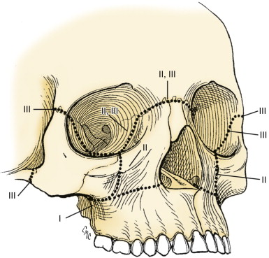

Face injury
3 life threatening emergencies:
i) airway obstruction; swelling, bleeding foreign body
- cricothyroidotomy; converted to tracheostomy asap
ii) heamorrhage
- facial / scalp lacs; closed sinus / midface #s
ii) aspiration
- assoc. with cerebral injury and alcohol
Management
1. Clinical exam
- whole face, eyes, sinuses, contour etc
- palpation or all bony surfaces
- facial and trigeminal nerve fx
- jaws, occlusion of teeth
- lacs to lips, mouth
- visual sensory fx
2. Appropriate imaging
- xrays are of little value; do a CT
3. Definitive wound / # management
Soft Tissue Injuries
Layered repairs achieve a flat wound, resulting in reduced scar
Any localized facial hematoma should be drained by incision and a
soft compressive dressing applied.
Lacerations of the facial nerve and parotid dut are managed by
direct repair using loupes
- stenson duct runs from 1in anterior to tragus on a line between
tragus and floor of nostril, to 2nd maxillary bicuspid.
CSF Rhinorrhea
Fractures involving frontal or basilar skull may lacerate the
dura
Prophylactic antibiotics
High res CT required for CSF leak or pneumocephalus
Definitive Fracture Management
Nasa #s should be treated with closed reduction
- external field block
Zogomatic #s
= malar prominence and lateral + inferior walls of the orbit
Can be depressed, with orbital muscle trapping causing diplopia
- can be mimicked by supraorbital #
- globe issues or even exopthalmos with severe orbit #s
Indications for surgery include functional symptoms from bone
displacement, anaesthesia of infraorbital nerve, ortib floor
fracture and excursion of the coronoid
Other facial #s
Traumatic telecanthus - consider and needs surgery; assicated
CSF leaks, frontal sinus #s
- epistaxis usually present with frontal sinus #s
Le-Forte:

- treated by IMF occlusion, plate and screw fixation 6-8w for bone
healing.
Mandibular fractures are common; often compounded in to the mouth
and with dental inury
- >50% subcondylar #s are comminuted.
- CT scan; arch bars to teeth, fixation, screw and plates,
blenderized diets if requiring occlusion.